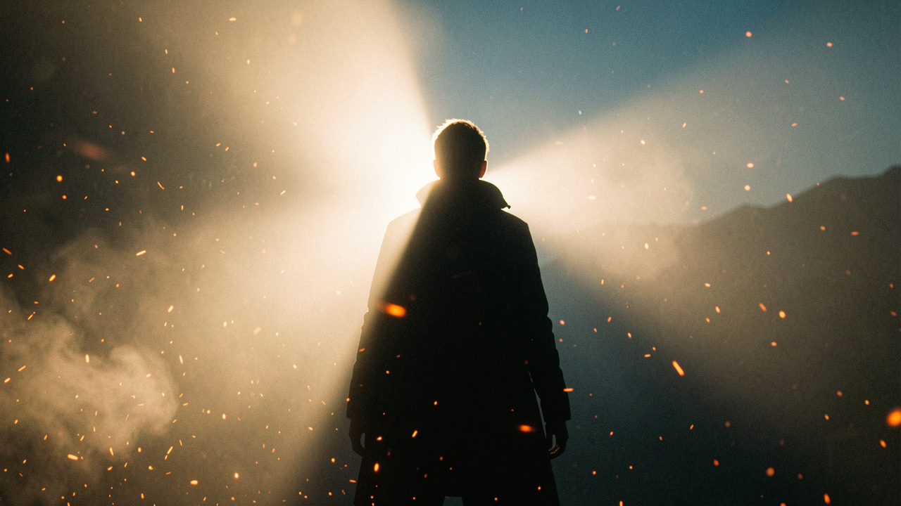

💡 Volumen LED y luz real
Enormes paredes LED proyectan entornos fotorrealistas directamente detrás de los actores durante el rodaje. El resultado: sombras naturales, reflejos precisos en el vestuario e iluminación de contorno auténtica.
⚓ Impacto
La luz real "ancla" al actor en el mundo digital de forma perfecta — la iluminación no se añade en posproducción, ocurre de verdad en el set.
🔥 Fuego práctico y lluvia práctica
El fuego digital muchas veces parece demasiado «limpio». El fuego real ofrece la imprevisibilidad necesaria para la inmersión; el agua física interactúa con el entorno de formas complejas.
🔥 Fuego práctico
- •Movimiento caótico de llamas y chispas orgánicas
- •Flujo natural de humo y distorsión por el calor
💧 Lluvia práctica
- •Ropa empapada, asfalto mojado, charcos
- •Salpicaduras auténticas y reflejos en superficies mojadas
🗝️ Secreto
El movimiento perfecto parece falso. El caos parece real. Y la física del agua es una de las formas más rápidas de revelar CGI de baja calidad.
🪢 Suspensión con cables y miniaturas
Suspender a los actores con cables captura respuestas físicas genuinas; las miniaturas físicas aún compiten con los renders digitales gracias a sus detalles tangibles.
🪢 Suspensión con cables
Inercia real, arrastre natural de la tela, desequilibrio corporal y movimiento retrasado realista.
Dato: el peso físico es una de las cosas más difíciles de simular en la posproducción.
🏯 Miniaturas físicas
Polvo realista, texturas táctiles, superficies descascaradas y niebla atmosférica natural.
Ilusión: con un encuadre cinematográfico, el cerebro percibe la miniatura como una estructura a escala real.
🧩 Híbrido físico + digital
Combinación de elementos reales en primer plano con fondos digitales. Crea una profundidad convincente y paralaje realista.
⚓ Principio
Elementos muy detallados en primer plano "anclan" toda la escena, dando credibilidad al escenario digital del fondo.
⚙️ YAML para VFX y limitaciones de la IA
En flujos de trabajo profesionales, usamos YAML para separar el control en bloques lógicos. Las reglas esenciales: una única función por campo, enfoque físico, iluminación definida y cámara controlada.
scene: technique: practical_fire lighting: source: "flames from frame right, flickering warm key" rule: "never leave light source to chance" motion: logic: "chaotic flame, organic sparks rising" secondary: "smoke drifts, heat distortion" camera: path: "slow push-in, grounded and logical"
⚠️ Presta atención a
- •Desviación del movimiento — objetos «flotando» o perdiendo la trayectoria
- •Rupturas del ritmo — aceleración artificial o fallas visuales
- •Texturas artificiales — superficies demasiado lisas o plásticas
La IA aproxima la realidad; no entiende realmente la física. Iterar es parte normal del proceso.
🎥 El blueprint final
El realismo cinematográfico sigue un flujo específico. Organiza cualquier escena con efectos en este orden:
🎯 Objetivo
Alcanzar realismo físico sin concesiones. Luz → Textura → Movimiento → Atmósfera → Emoción es la secuencia que sostiene cualquier escena de efectos.
📝 Tarea — Una técnica en YAML
Elige una técnica (volumen LED, fuego práctico, cables, lluvia, miniaturas o híbrido) y crea una escena realista de 5 segundos usando un prompt estructurado en YAML. Aplica las reglas: función única, enfoque físico, iluminación definida y cámara controlada.
📌 Resumen del módulo
Próximo módulo:
5.5 — Cámara Lenta y Sistemas de Partículas